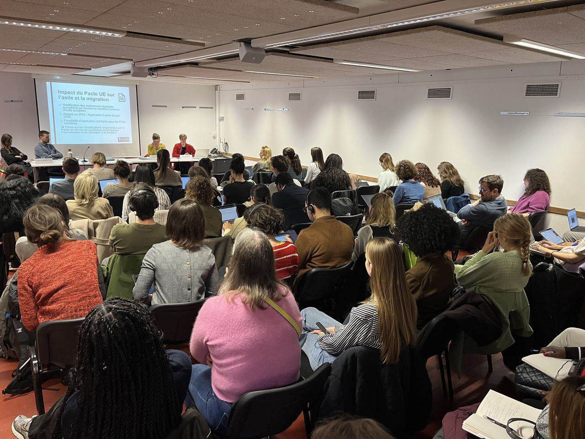
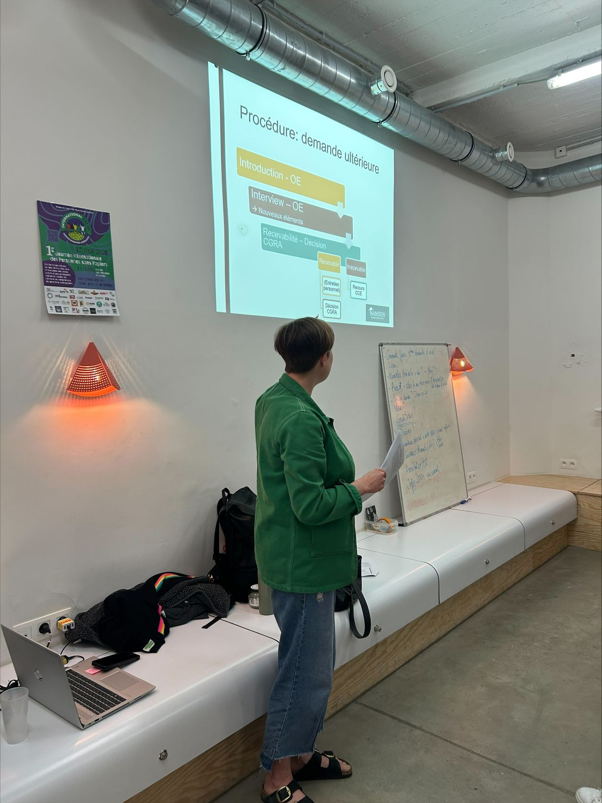
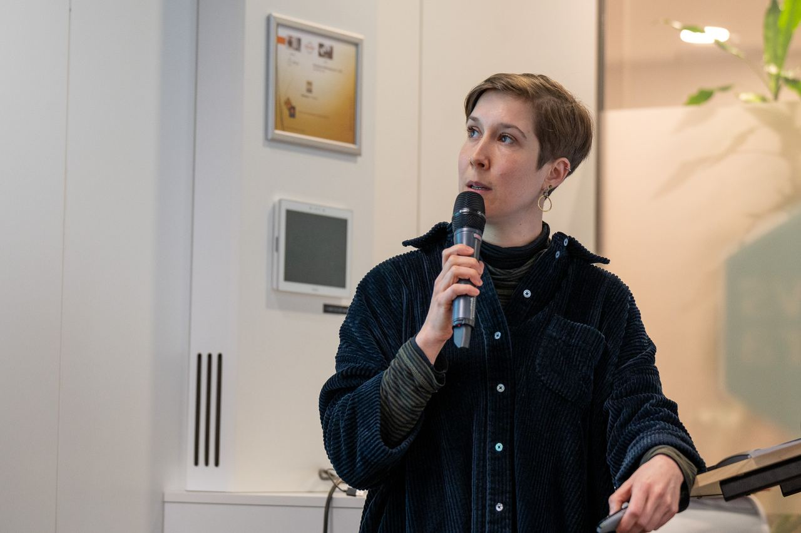

Vorming
Een sessie van een halve of volledige dag rond één thema, met theorie en casussen. Bijvoorbeeld: het Protocol van Istanbul voor 60 protection officers van het CGVS.
AanvragenNANSEN deelt wat het leert uit dossierwerk met de mensen die dagelijks met deze procedures werken: advocaten, juristen, protection officers, artsen, maatschappelijk werkers en tolken.



Een sessie van een halve of volledige dag rond één thema, met theorie en casussen. Bijvoorbeeld: het Protocol van Istanbul voor 60 protection officers van het CGVS.
AanvragenEen gesprek tussen praktijkjuristen op basis van concrete dossiers. Bijvoorbeeld: non-refoulement aan de grens, samen met ECRE, met meer dan 60 deelnemers.
AanvragenEen opgenomen module die deelnemers zelf volgen. Bijvoorbeeld: staatloosheid op het leerplatform van de Orde van Vlaamse Balies.
AanvragenVoor rechtenstudenten en jonge juristen, in samenwerking met universiteiten zoals UCLouvain en UGent.
AanvragenVertel ons voor wie de vorming is en wat u wilt bereiken. We nemen binnen enkele werkdagen contact op.